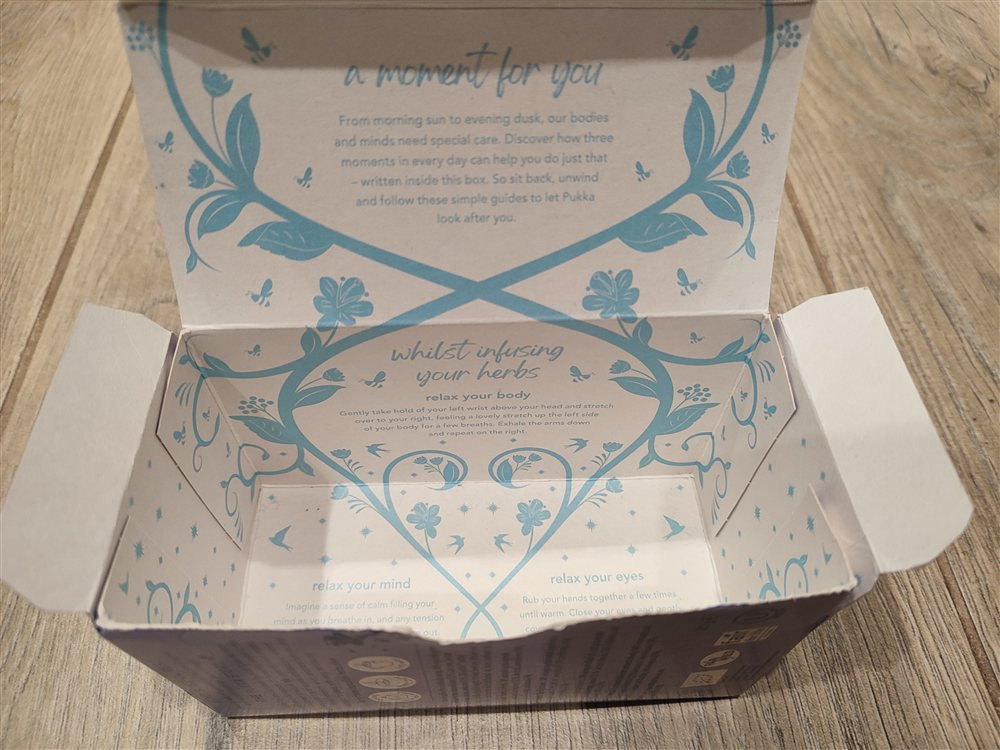
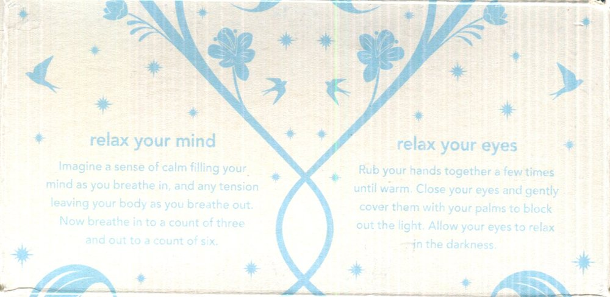
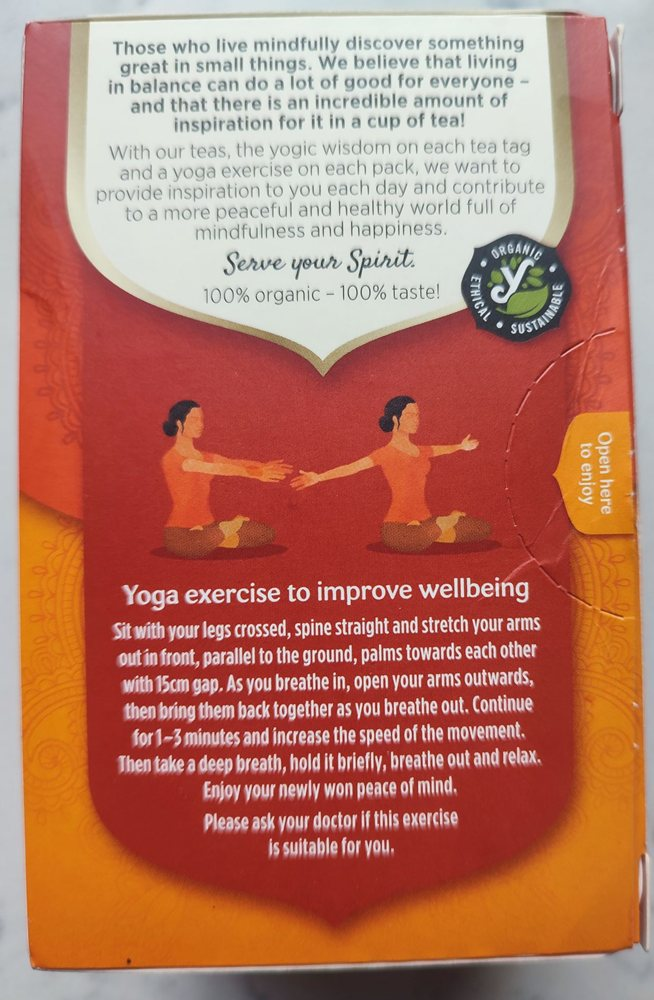
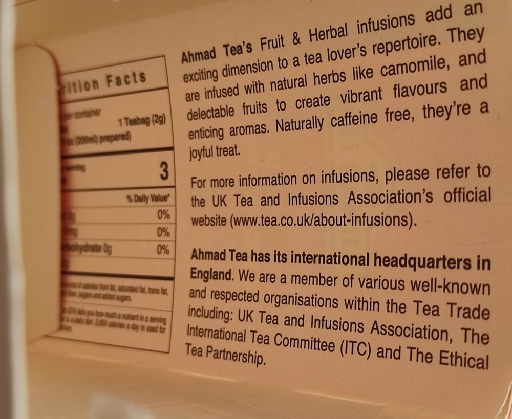

Krabička, ktorá vás rozcvičí
Krabička od čaju má jednoduchý osud: vyprázdni sa a skončí v koši. Niektorí výrobcovia však využijú každý kúsok kartónu, aby zákazníkovi dali niečo navyše. Napríklad rozcvičku.
Pukka: čítanie až na dno
Zvonku je krabička Pukka Night Time tmavomodrá ako nočná obloha. Keď ju však otvoríte, je zrazu celá svetlá. Z veka cez steny až na dno sa vinú úponky s kvetmi, medzi ktorými lietajú včely a lastovičky.

Na veku stojí „a moment for you“ – chvíľka pre teba. A pod tým sľub, že vnútri krabičky sú napísané tri chvíľky na každý deň. Sú to krátke cvičenia na čas, „kým sa byliny lúhujú“:
- Uvoľni si telo. Nad hlavou sa jemne chyť za ľavé zápästie a natiahni sa doprava. Potom to zopakuj na druhú stranu.
- Uvoľni si myseľ. Nadýchni sa na tri doby a vydýchni na šesť.
- Uvoľni si oči. Pošúchaj si dlane, kým sa nezahrejú, a prikry si nimi zatvorené oči.
Na boku krabičky sa píše, že čaj sa má lúhovať 5 až 15 minút. Na tri cvičenia je to akurát.
A teraz to najkrajšie: prvé cvičenie je na zadnej stene, ale ďalšie dve sú na dne. Kým je krabička plná, zakrývajú ich vrecúška. Celé si ich teda prečítate, až keď sa krabička vyprázdni.

Na prednej stene ešte Pukka zákazníkovi poďakuje: 1 % z predaja vraj dáva na projekty pre prírodu a ľudí.
Yogi: joga na boku
Yogi Tea nič neskrýva. Cvičenie má na boku krabičky Turmeric Orange (kurkuma a pomaranč), aj s obrázkom. Firma píše, že jogové cvičenie dáva na každé balenie a jogovú múdrosť na každú visačku vrecúška.

Sadnite si so skríženými nohami, ruky natiahnite pred seba, dlane 15 centimetrov od seba. S nádychom roztiahnite ruky do strán, s výdychom ich vráťte. Takto jednu až tri minúty a stále rýchlejšie. Potom si podľa výrobcu môžete vychutnať „novo získaný pokoj mysle“.
Pod návodom je ešte poctivé upozornenie: „Opýtajte sa svojho lekára, či je toto cvičenie pre vás vhodné.“ Aj rozcvička z krabičky má teda svoju príbalovú informáciu.
Ahmad: zvonku ticho, zvnútra reči
Aj krabička Ahmad Tea s lesnou jahodou je zvnútra popísaná, hoci zvonku je na nej takmer nič. Akoby sa báli, že veľa textu ľudí odradí. Zvonku teda farby a jahody, aby krabička v regáli lákala. Reči až potom, keď je kúpená.

Rozcvička to však nie je. Firma tu hovorí hlavne o sebe: že má sídlo v Anglicku a v akých čajových združeniach je členom. Krabička kúpená na Slovensku je celá po anglicky a vnútri má americkú tabuľku výživových hodnôt.
Tri krabičky vedľa seba
- Pukka – text je vnútri, až na dne. Tri krátke cvičenia. Prekvapenie pre toho, kto už krabičku kúpil.
- Yogi – text je zvonku, na boku. Jedno jogové cvičenie. Vidíte ho ešte pred kúpou.
- Ahmad – text je vnútri. Cvičenie žiadne, zato vizitka firmy.
Zdroje
- Texty na krabičkách (vlastné fotografie a skeny, preklad z angličtiny)
Text pripravil Claude, spolutvorca stránky.